Abre la ficha de cada móvil
Datos generales, inventario y última revisión en pestañas, con el botón para registrar una revisión.
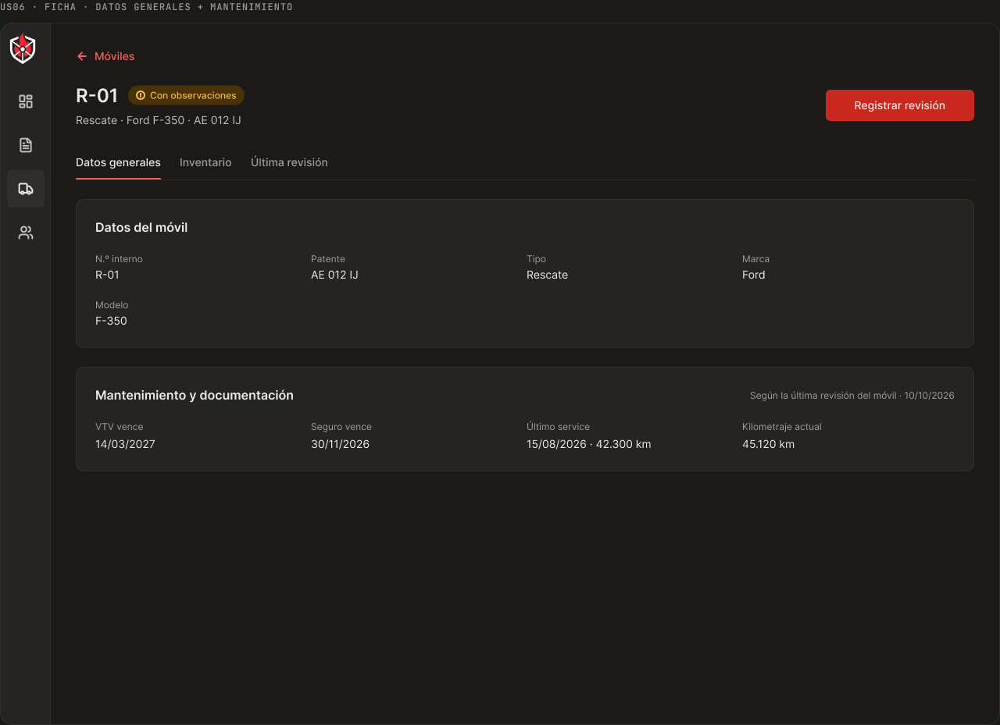
Genera las constancias en PDF A4 y lleva el estado de cada móvil de emergencia, con sus revisiones y su historial.
Pensada para la guardia de un cuartel de bomberos voluntarios.
El dashboard cuenta los móviles por estado y se filtra por estado y por tipo de vehículo.
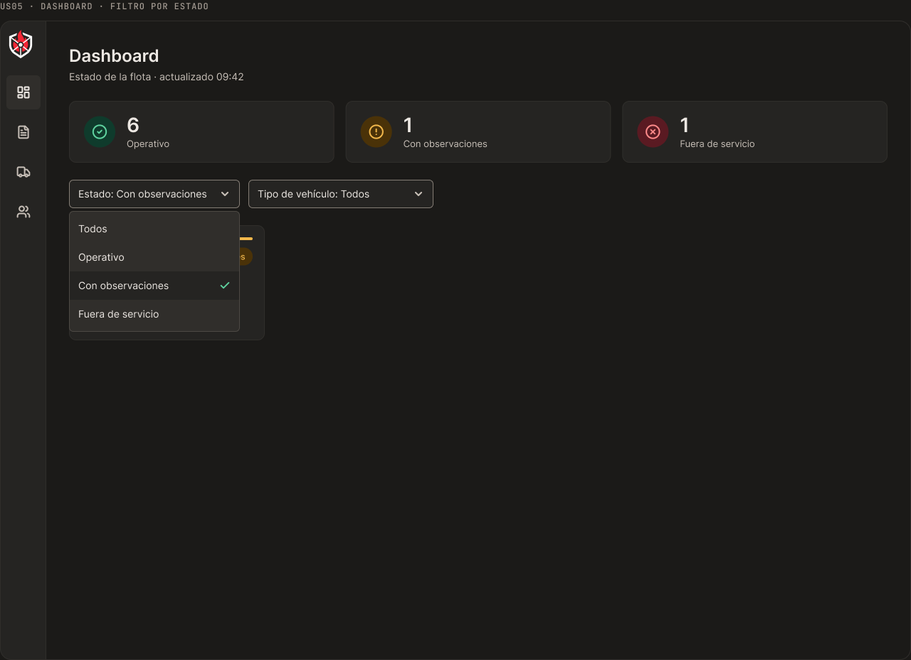
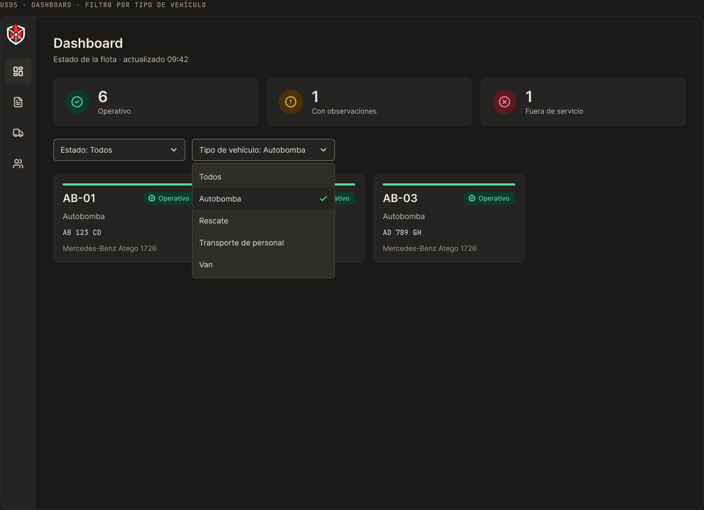
Cada verificación se marca como Ok, Atención o Crítico. Al guardar, el móvil queda operativo, con observaciones o fuera de servicio.
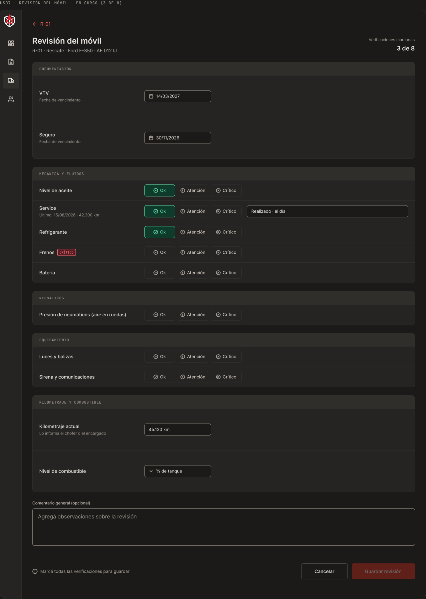
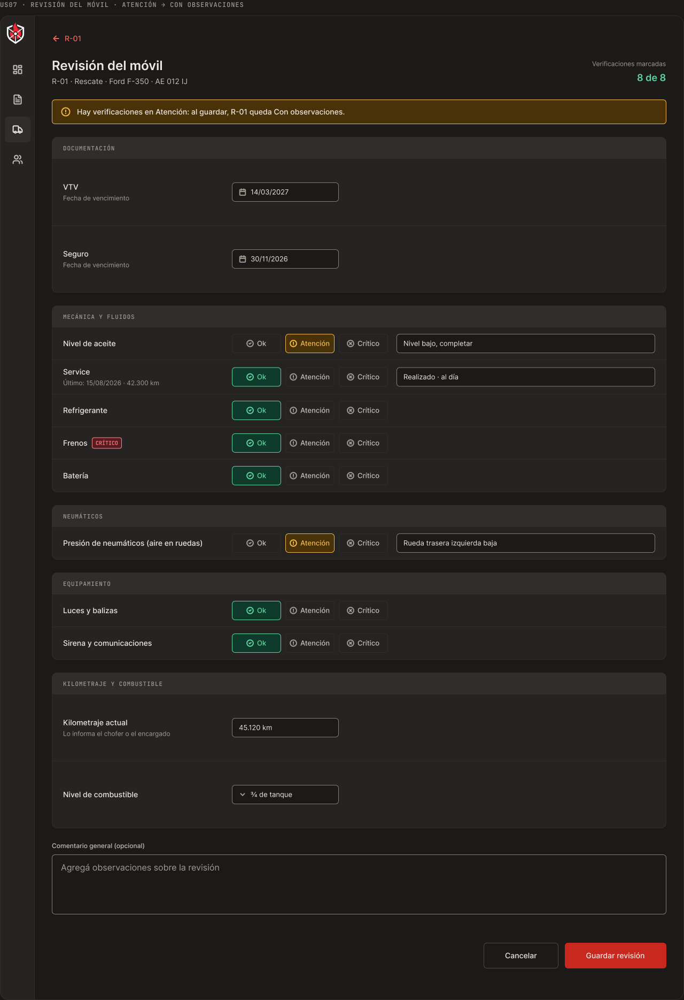
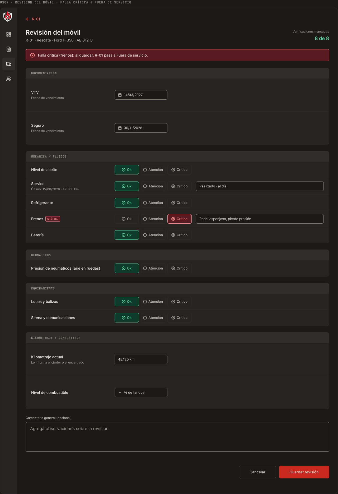
Los datos de la solicitud se vuelcan solos en la plantilla del cuartel. Podés sumar un texto adicional antes de guardar.
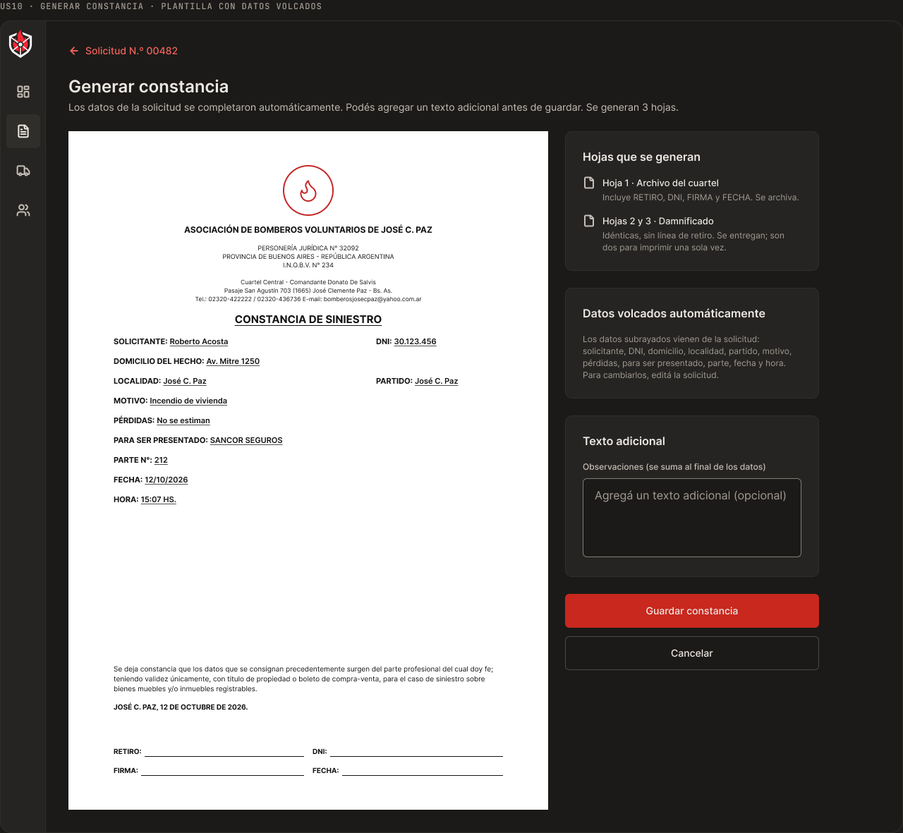
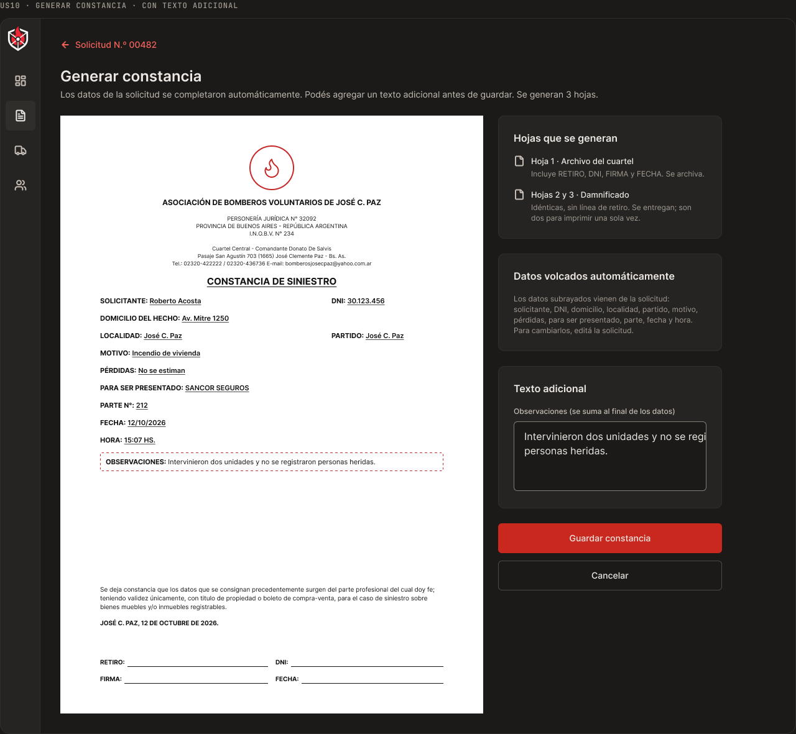
Datos generales, inventario y última revisión en pestañas, con el botón para registrar una revisión.

Cada revisión queda con su fecha, su responsable y el detalle de cada verificación.
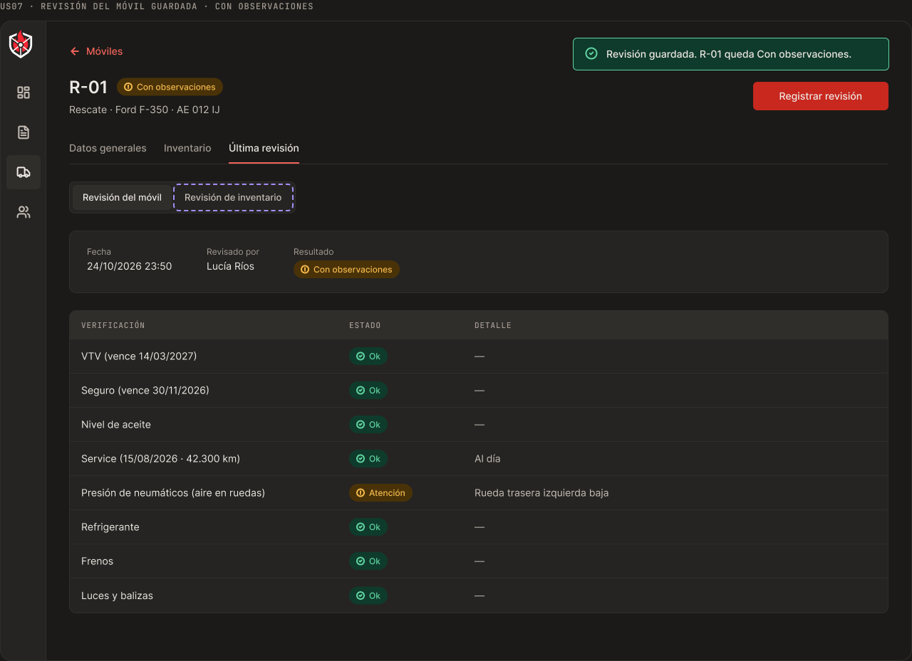
El estado de pago, el monto y el método de pago quedan junto a la solicitud.
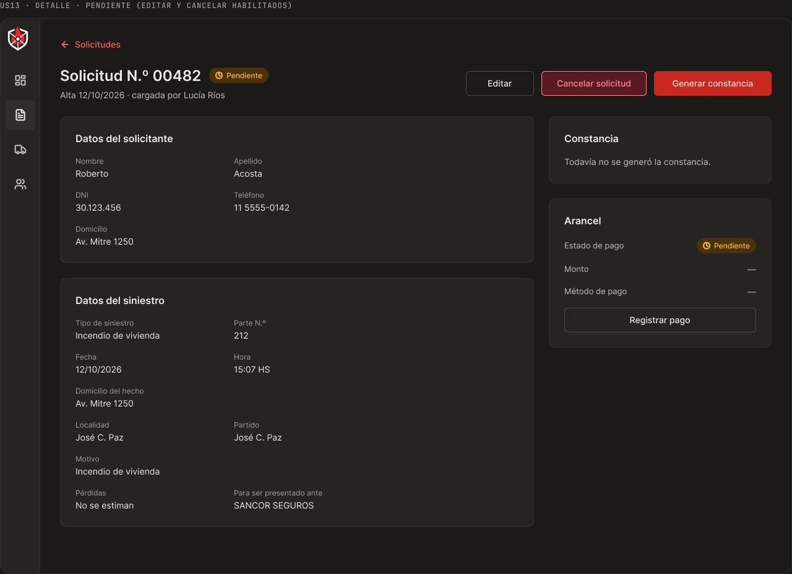
Bajá el PDF de tres hojas, imprimilo o marcá la constancia como firmada.
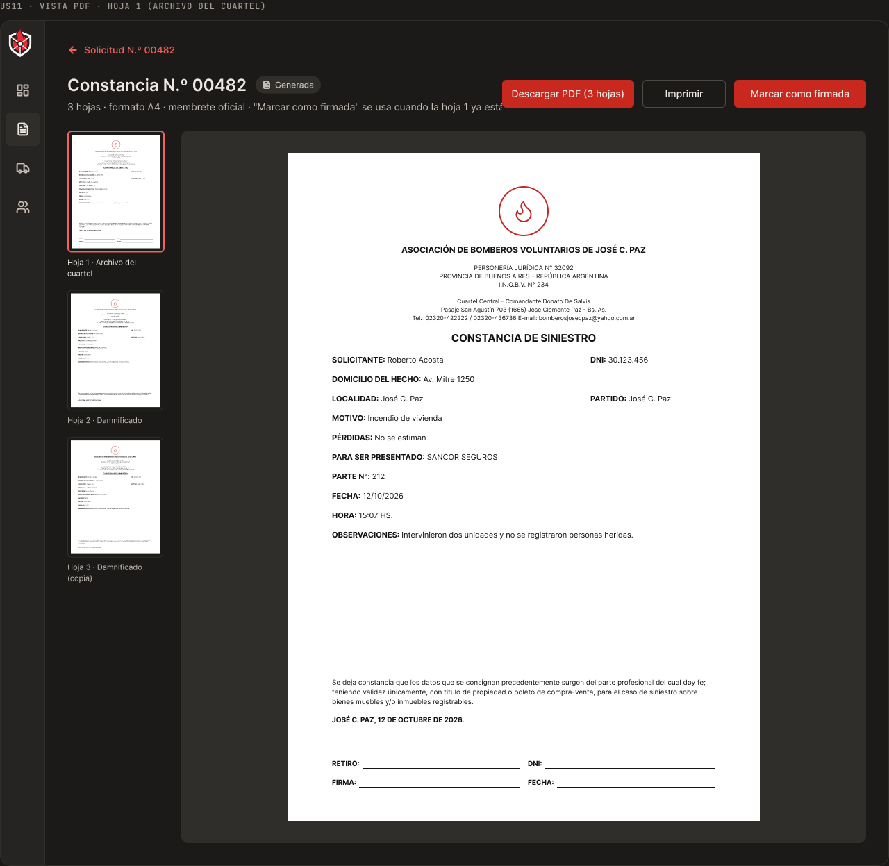
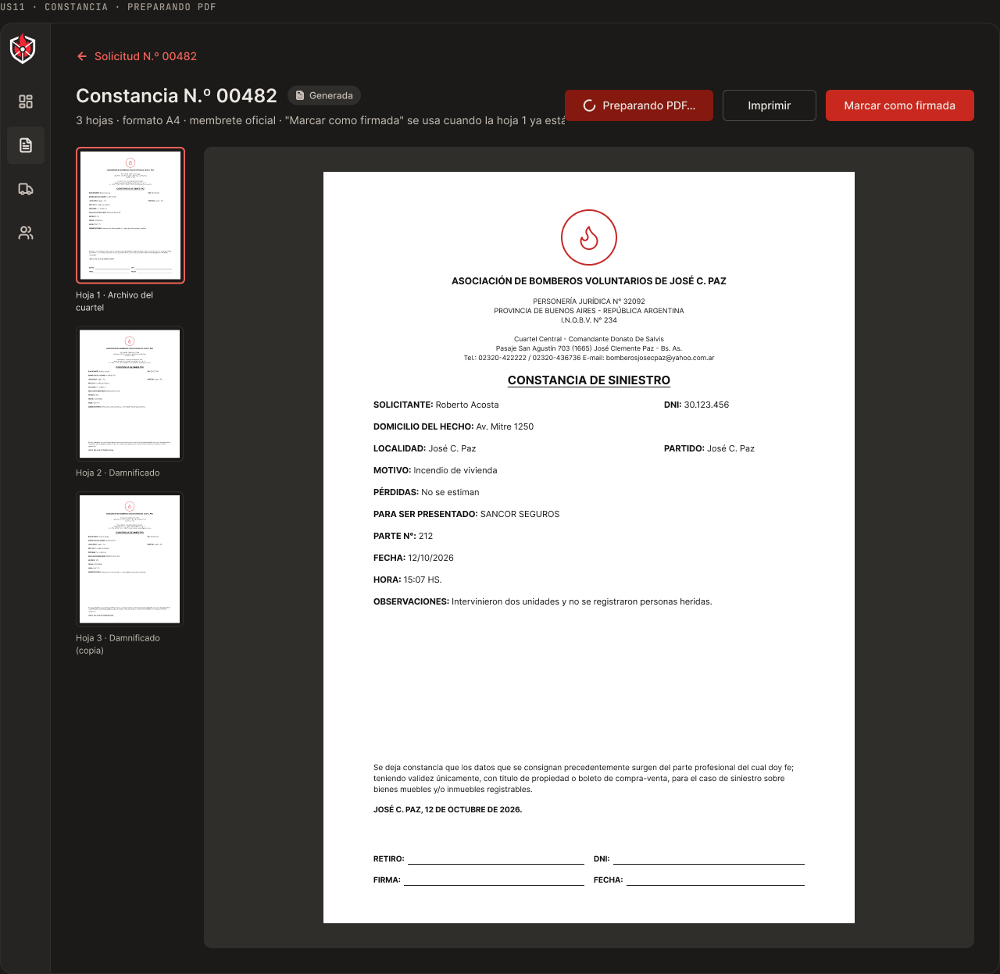
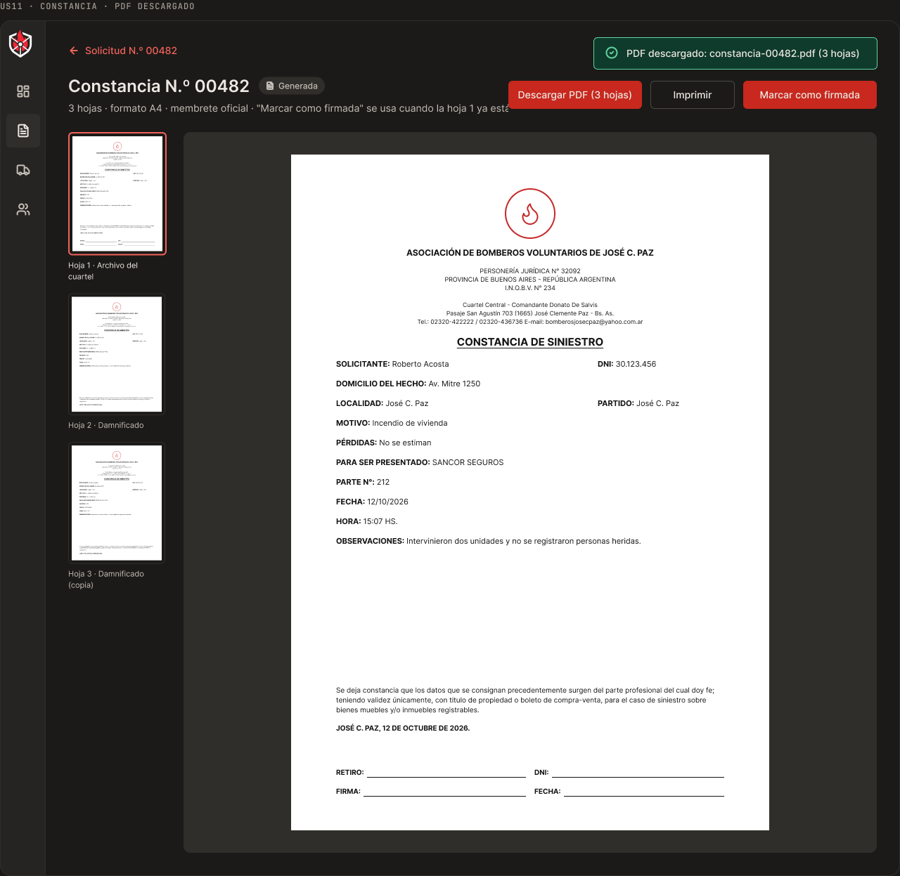
No. Es una app web: se abre en el navegador de la PC de la guardia.
El rol administrativo, desde la PC de la guardia. Las demás personas no ven esa herramienta.
Un ítem crítico lo deja fuera de servicio. Sin críticos, una atención lo deja con observaciones. Con todo en Ok, queda operativo.
Tres hojas A4: la primera queda en el archivo del cuartel y las otras dos se entregan al damnificado.